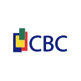
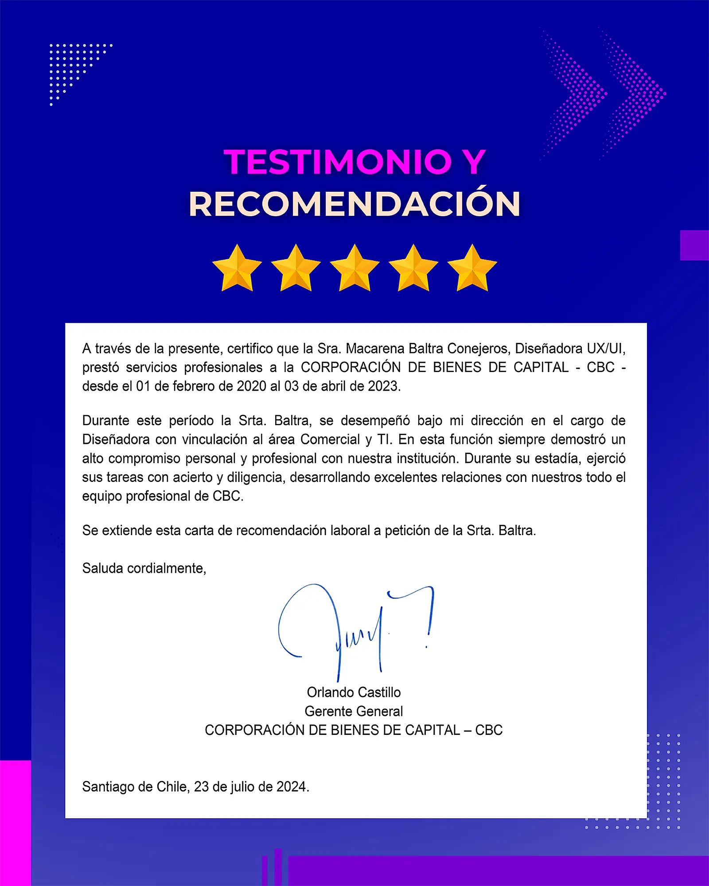

Detalles del proyecto
Herramientas utilizadas
Colaboradores/Stakeholders
Contexto
Al llegar a CBC el sitio web tenía más de 20 años sin actualizarse: no era responsivo, carecía de jerarquía de contenido y bloqueaba activamente el SEO y los procesos de marketing. No existía manual de marca, guía de estilos ni documentación de componentes. El equipo de desarrollo no tenía referencias visuales para construir.
Desafío
Rediseñar el sitio desde cero — con research real, arquitectura de información clara y un prototipo front-end funcional — para que CBC pudiera generar tráfico orgánico, captar leads y tener una base técnica lista para escalar con nuevas funcionalidades.
Empresa/Cliente: Corporación de Bienes de Capital

Proceso
Card sorting con el equipo interno: Sesiones con stakeholders de Marketing, Comercial y TI para mapear contenidos, prioridades y estructura de navegación — antes de dibujar una sola pantalla.
Critical User Journey Map: Identifiqué los flujos críticos de cada tipo de visitante: desde el primer contacto hasta la conversión. Esto reveló los puntos de fuga que el sitio antiguo nunca resolvió.
Benchmarking competitivo: Analicé referentes del sector para identificar brechas y oportunidades de diferenciación en contenido, navegación y llamadas a la acción.
Prototipado front-end en HTML5/CSS3/Bootstrap 4: Construí un prototipo responsivo y clicable, validado en ciclos cortos con TI y Marketing. No solo wireframes — código real que el equipo podía revisar en el navegador.
Iteración en sprints Agile: Ciclos de feedback rápidos con stakeholders para afinar diseño, SEO on-page y usabilidad — hasta llegar a un entregable ready-to-code con documentación de componentes.
Resultados
+40% tráfico orgánico — tras optimizar estructura de contenido y SEO on-page en los primeros 6–12 meses.
+25% en formularios de contacto — aumento sostenido en leads desde el lanzamiento.
Prototipo ready-to-code entregado — con guía de estilos, tokens, componentes y snippets CSS/Bootstrap listos para implementar.
Base escalable — el sistema de diseño sentó las bases para nuevos productos digitales y automatizaciones futuras.
Nota de metodología: las métricas fueron construidas desde cero durante los primeros 3 meses post-lanzamiento, en colaboración con el equipo de Marketing responsable de Analytics. Los incrementos reportados corresponden a los 6–12 meses siguientes al lanzamiento y fueron validados cruzando reportes internos entre equipos. Esta transparencia es parte de mi proceso — los datos importan solo cuando se entiende cómo se midieron.
UX Architect & Prototyper Developer
Como UX Architect lideré el diagnóstico completo del sitio: a través de card sorting y critical journey maps identifiqué los bloqueos reales — estructura caótica, contenido oculto y flujos que nunca llevaban a la conversión.
Con esos hallazgos definí una arquitectura de información clara, jerarquías lógicas y patrones de navegación coherentes con los objetivos de negocio de CBC.
Como Prototyper Developer construí el MVP en HTML5/CSS3/Bootstrap 4 — un prototipo clicable y responsivo que los stakeholders podían revisar en el navegador, no solo en Figma. Entregué documentación técnica completa: guía de estilos en PDF, tokens de diseño, componentes y snippets CSS/Bootstrap listos para integrar directamente en el código.
El resultado fue un giro real: CBC dejó atrás su sitio de los 90s, ganó visibilidad orgánica, aumentó sus leads y se dotó de una base técnica moderna lista para escalar.
Testimonios & Referencias
Carta de recomendación formal emitida por el Gerente General de CBC al cierre de 3 años de colaboración — disponible para reclutadores que la soliciten.
-

Feb 2020 – Abr 2023 |Dependiente
Carta de Recomendación“Siempre demostró un alto compromiso personal y profesional con nuestra institución. Durante su estadía, ejerció sus tareas con acierto y diligencia, desarrollando excelentes relaciones con todo el equipo profesional de CBC."
Orlando Castillo
Gerente General en Corporación de Bienes de Capital (CBC)
3 años de colaboración continua — Feb 2020 a Abr 2023.
Rol: UX/UI Designer & Prototyper Developer en equipo interno.